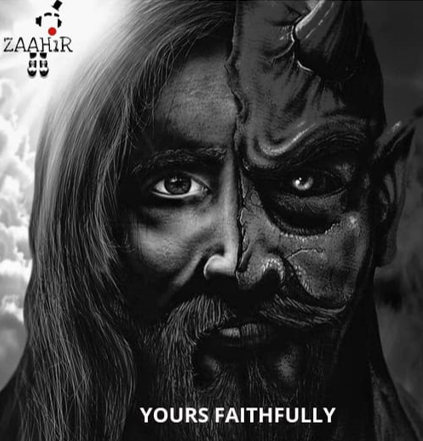

ZAAHiR
AAYA THA BATA DENA
üé≠The Theatrical Society of BVCOEüé≠
üé≠ZAAHiR AAYA THA BATA DENA!!üé≠
üé≠ZAAHiR AAYA THA BATA DENA!!üé≠
ABOUT ZAAHiR
Welcome to ZAAHiR, the official theatre society of BVCOE and the oldest cultural society of the college. Since its inception, ZAAHiR has been a beacon of creativity, storytelling, and social impact through the powerful medium of theatre and street plays.
At ZAAHiR, we believe that theatre is more than just an art form—it is a movement. From thought-provoking stage performances to hard-hitting street plays, our actors breathe life into stories that inspire, question, and ignite change.
Over the years, we have performed across various prestigious platforms, leaving audiences moved and mesmerized.
üé≠ "The stage is not just a space‚Äîit‚Äôs where voices are heard, stories are told, and emotions come to life."
Faculty Coordinator
LEADS

They are the heartbeats of storytelling, breathing life into characters, emotions, and the very essence of the stage. üé≠‚ú®
MANCHKRIT, the crown jewel of ZAAHiR ‚Äì The Theatrical Society of BVCOE, is a celebration of the raw, unfiltered power of Nukkad Natak. A stage without boundaries, it brings together passionate teams from across the circuit to voice stories that matter. With bold narratives, electrifying performances, and a spirit of revolution, Manchkrit turns the streets into a canvas of change. Here, theatre is not just performed‚Äîit echoes, awakens, and inspires. üö©ü駂ú®
ZAAHiR’s Productions
Band Baja Hawalat
"एक तू है, एक मैं हुँ इंसां दोनो ही हैं एक सही है,एक गलत है बस प्रशन करने की देरी है। अभीव्यक्ती से खेलते है, मकसद हमारा भी एक ही हैं, गलत सही का भेद दिखा कर सब ज़ाहिर करना जरूरी हैं।"
Yours Faithfully
नीला कुर्ता रख लेना कुछ अन कहे जज्बात रख लेना वो गाने का ताल तालियों की आवाज़ रख लेना जब आना कल मिलने हमसे नुक्कड़ का एहसास रख लेना
Yours faithfully ZAAHiR
Source Kya Hai
Soch Samajh Kar
Herd mentality, fueled by word of mouth, manifests as a powerful force, shaping collective behavior and opinions. Whether it’s choosing what to buy, what to believe, or how to act, people often go along with what they hear others say, even if not the best choice for themselves and others.
Achievements